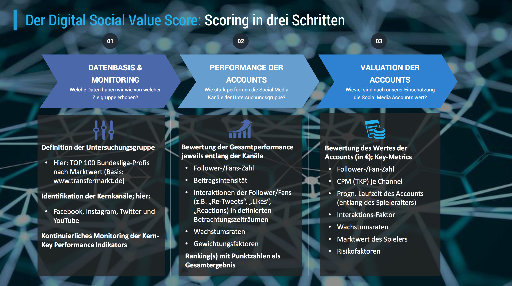
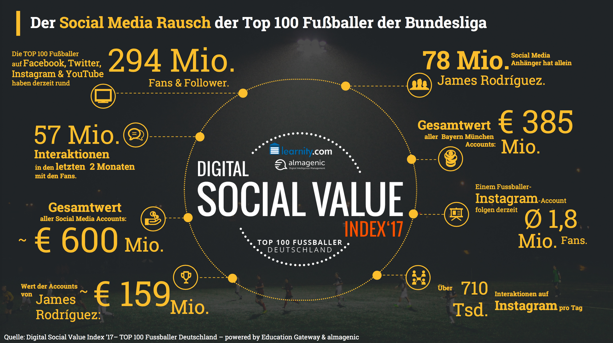

„Wie performen die Social Media Accounts der Top 100 Bundesliga-Profis und wie hoch ist ihr Social Value?“

Quelle: Bild.de
Mit dem Rekordwechsel von Neymar für 222 Mio. € zu Paris St. Germain und dem darauf folgenden Wechsel von Ousmane Dembélé zu Barcelona haben die Ablösesummen für Fußballer einen neuen Höchststand erreicht. Das Echo in den Medien war groß und viele Experten, Trainer und Fans hatten nur eine Frage: Welchen Wert kann und darf ein Fußballer eigentlich haben?
Wir haben uns gemeinsam mit der Education Gateway GmbH dem Thema einmal von einer anderen Seite genähert. Im Mittelpunkt der Betrachtungen steht hier nicht der spielerische Wert des Fußballers auf dem Rasen. Vielmehr haben wir uns der Frage zugewendet, welchen kommerziellen Wert die einzelnen Accounts der 100 wertvollsten Bundesligaspieler haben, wenn sie gezielt für Influencer Marketing genutzt werden würden.
Die Antwort auf diese Frage ist der Digital Social Value Index ’17/1, eine in Systematik und Tiefe einzigartige Studie über den Social Media Marktwert der Bundesliga Stars.
Digital Social Value – Scoring in drei Schritten
Als Datengrundlage der Studie dienen die Social Media Accounts der 100 wertvollsten Spieler der Bundesliga. In einem ersten Schritt wurden die Twitter-, Facebook-, Instagram- und YouTube-Accounts untersucht und die wichtigsten Key Performance Indicators (KPIs) über einen Zeitraum von 60 Tagen kontinuierlich gemessen.

Im zweiten Schritt wurde die Performance der Accounts entlang der Channels nach einer Vielzahl von Kriterien bewertet. Zu den Kriterien gehören vor allem Followerzahl, Beitragsaktivität und Interaktionsraten.
In einem dritten Schritt wurde auf dieser Grundlage der monetäre Wert der Accounts berechnet und damit der sog. Digital Social Value Score quantifiziert. Diese Bewertung der verschiedenen Accounts berücksichtigt neben Followerzahlen, Growth Rates und dem Marktwert des Spielers weitere wichtige Key Metrics, bspw. den Tausender-Kontakt-Preis (CPM) je Channel, individuelle Interaktionsfaktoren, Risikofaktoren und die prognostizierte Laufzeit des Accounts.
Die Accounts sind über 600 Mio. € wert, Bayern-Star James Rodríguez ist der strahlende Sieger
Die Analyse der verschiedenen Social Media Accounts zeigt zum einen einige generelle interessante Social Media Trends auf. Zum anderen zeigt sie den beeindruckenden kommerziellen Wert der Accounts, ihre hohe Bedeutung und auch das extreme Engagement, mit dem die Profi-Sportler diese Accounts betreiben:

Hierzu im Einzelnen:- Mit 74 Profilen ist Facebook noch immer der Channel, in dem die meisten Fußballer vertreten sind. Instagram folgt mit 62 Profilen, aber deutlich höheren Followerzahlen und Interaktionen. Auf Twitter sind 51 Spieler der 100 wertvollsten Bundesliga-Spieler vertreten. Lediglich sieben Spieler verfügen über einen eigenen, offiziellen YouTube Kanal.
- Insgesamt folgen den Profilen der Top 100 Player aktuell rund 294 Mio. Personen: 128 Mio. davon auf Facebook und weitere 113 Mio. auf Instagram. Twitter liegt mit 52 Mio. Followern nur auf Platz 3. YouTube hingegen ist mit nur 81 Tsd. Abonnenten zum jetzigen Zeitpunkt unbedeutend.
- Bei den durchschn. Followern pro Account ist jedoch schon jetzt Instagram führend. Rund 1,8 Mio. Follower hat ein Profil im Durchschnitt, auf Facebook hingegen sind es „nur“ 1,74 Mio.
- Unglaubliche 57 Mio. Interaktionen fanden auf den Accounts der Fußballer in den vergangenen zwei Monaten (Mitte Juni bis Mitte August) statt. Allein auf Instagram finden durchschnittlich täglich 710 Tsd. Interaktionen der Fans mit den Accounts ihrer Idole statt.
- Nicht nur in der Bundesliga, sondern auch in den sozialen Netzwerken gibt es einen recht deutlichen Marktführer: In den Digital Social Value-Top 25 finden sich 14 Spieler des FC Bayern München und 9 von Borussia Dortmund. Insgesamt 63,9% aller Interaktionen fanden mit Beiträgen der Spieler des FC Bayern München statt.
- In den sozialen Netzwerken ist der strahlende Performance-Sieger James Rodríguez und damit der „Spieler, der den Unterschied macht“: Insgesamt 78 Mio. Follower und 11,6 Mio. Interaktionen in den letzten zwei Monaten sorgen für einen ungefährdeten ersten Platz im Performance-Ranking der Social Media Profile trotz eher durchschnittlicher Beitragsaktivität.
- Auch im Digital Social Value liegt James Rodríguez vorn. Vom Gesamtwert von 600 Mio. Euro machen allein seine Accounts über 25% – nämlich 160 Mio. Euro – aus. Auf Platz 2 und 3 folgen Mario Götze (50,7 Mio. Euro) und Torjäger Robert Lewandowski (45,8 Mio. Euro).
Auch in den Medien wird bereits ausführlich über diese Studie berichtet:
Die Welt: Jetzt kann Ancelotti seinen Wunschprofi James bringen
Sky Sport: So viel sind die Social-Media-Accounts der Bundesliga-Stars wert
Goal: Bayerns James Rodruigez Wertvollster Bundesliga-Star auf Social Media
Bild.de: James Rodriguez ist die Nummer 1
Die vollständige Studie erhalten Sie bei uns unter info@almagenic.com oder über die Homepage der Education Gateway (http://www.education-gateway.de/market-intelligence.php.). Hier drin enthalten sind neben weiteren Detailanalysen und detaillierten Auswertungen der einzelnen Kanäle auch Übersichten zur Systematik und Methodik. Generelle Informationen zu unserem Partnerunternehmen erhalten sie hier: www.education-gateway.de.
Pressekontakt:
almagenic UG
Gunter Nowy
mail info@almagenic.com
fon +49 221 16825870
oder
Education Gateway GmbH
Simon Amann
mail pr@education-gateway.com
fon +49 (0)40 46090 793
almagenic Founder & Product Development